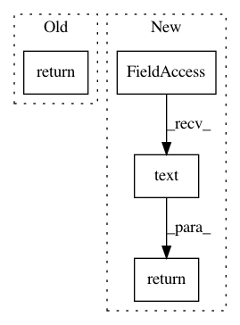

09611b9b80468bf0bd9e8f1522f78947eebbd657,classification/loadFileDlg.py,LoadFileDialog,exec_,#LoadFileDialog#,23
Before Change
def exec_(self):
if QDialog.exec_(self) == QDialog.Accepted:
return "filePath"
else:
return "Cancel"
if __name__ == "__main__":
After Change
def exec_(self):
if QDialog.exec_(self) == QDialog.Accepted:
return self.lineEdit.text()
else:
return "Cancel"
if __name__ == "__main__":
In pattern: SUPERPATTERN
Frequency: 3
Non-data size: 4
Instances
Project Name: ilastik/ilastik
Commit Name: 09611b9b80468bf0bd9e8f1522f78947eebbd657
Time: 2012-02-17
Author: kai.karius@googlemail.com
File Name: classification/loadFileDlg.py
Class Name: LoadFileDialog
Method Name: exec_
Project Name: ilastik/ilastik
Commit Name: f3f6a2bfcea147bf044c31c04f667ae922ee64a4
Time: 2012-02-17
Author: opetra@ubuntu.(none)
File Name: classification/saveDialog.py
Class Name: SaveDialog
Method Name: exec_
Project Name: ilastik/ilastik
Commit Name: 8861dfa21d1cfd487b7a6eb7508885f084f58e6c
Time: 2019-07-10
Author: tomaz.vieira@embl.de
File Name: ilastik/applets/dataSelection/datasetInfoEditorWidget.py
Class Name: DatasetInfoEditorWidget
Method Name: get_new_axes_tags